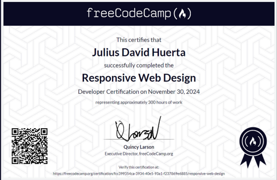
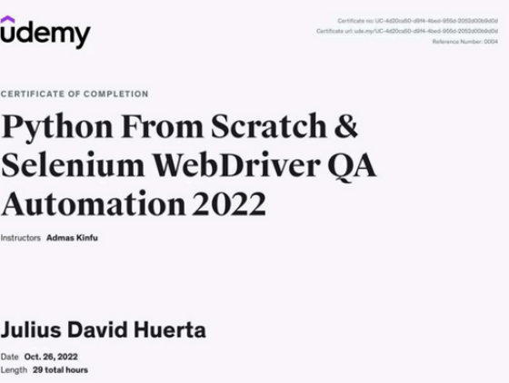
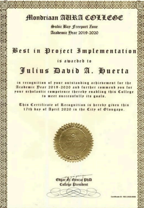

Julius Huerta
QA / Aspiring Developer
Summary
A versatile Quality Assurance professional adept at both manual and automated testing that is
committed to ensuring the delivery of high-quality software products by employing my
expertise, meticulousness, and continuous improvement mindset.
Education
- Associate in Computer Technology - Gordon College (2015-2017)
- BS in Computer Science - Mondriaan Aura College (2018-2020)
Work Experience
-
Quality Test Analyst II - REED ELSEVIER PHILIPPINES
June 2024 - Present
- Validate job completion and review system logs to verify successful execution and data
integrity.
- Write and maintain ECL scripts to check the accuracy of job execution and system behavior.
- Utilize ECL to compare input vs. output data and verify business rules.
- Perform data validation and integrity checks through ECL scripts to ensure expected
outcomes
- Validate system behavior against Business Workload Requirements (BWR) to ensure
business processes are accurately supported.
- Document test results, issues, and resolutions for both technical and business
stakeholders
- Prepare detailed test summary reports, highlighting test coverage, pass/fail rates, and any
significant issues found during testing.
- Ensure that test results and logs are recorded in the Batch Portal for traceability and audit
purposes.
- Log and track defects using defect management tools, and ensure that defects are retested
after fixes are applied.
- Collaborate with development, operations, and business teams to ensure accurate test
coverage and that any discrepancies between the test environment and production are
addressed.
- ommunicate testing status and issues to project managers, team leads, and stakeholders.
- Participate in test planning and design discussions to ensure comprehensive test coverage
aligned with business requirements
-
QA Automation Engineer - iRely Philippines Inc.
June 2023 - June 2024
- Implemented and maintained automated test scripts using Playwright and TestComplete
for web applications, ensuring comprehensive test coverage.
- Designed and executed test cases within a Behavior-Driven Development (BDD) framework,
fostering collaboration between development and QA teams.
- Integrated automated tests into Jenkins for continuous integration, enabling efficient and
timely feedback on code changes.
- Collaborated with cross-functional teams to understand project requirements and design
effective test strategies.
- Utilized Zephyr and Jira for test case management, execution, and tracking of defects
throughout the software development lifecycle.
-
QA Automation Engineer - GOETU Software Solutions Inc.,
Jan 2023 - July 2023
- Create and execute test cases.
- Create and execute test scripts using Selenium Java (Eclipse IDE)
- Data gathering for project requirements and system design
- Using Java and Python for Automation
- BDD test framework
- Developed test plans for web applications to ensure comprehensive testing and approach
- Testings performed in applications:
- Smoke, Sanity, Regression BBT, PVT and UAT
- Functional and Non-functional testing
-
Mobile QA Engineer - EasyPOS Solutions Inc.,
Dec 2020 - Dec 2022
- Execute all levels of testing:
- Functional (System, Integration, Regression, User Acceptance Testing, End-to-End
testing, Happy path, Monkey testing and Post Verification Testing)
- Non-functional (Usability, Performance, Stress and Security testing)
- Create and execute test cases
- Coordinated periodic testing and scheduled maintenance to ensure proper equipment and
system operation.
- Identified test scenarios, estimated time effort and created test plans
- Gathered data on integration issues and vulnerabilities and report all findings, including
improvement recommendations
- Maintained regression test suite and other testing scenarios
- Handled and tested 5 Android mobile applications
- AWS Management for Push notifications and User Pool(Cognito, SNS, IAM, CodeCommit,
CloudWatch)
- Created Android app bundles and deploy app bundles in Google Play Store
- Development in Mobile Application using Kotlin
- API testing using Postman
- Create defect report documentation
Skills
- Automation Testing: Playwright, TestComplete
- Behavior-Driven Development (BDD): Cucumber, Gherkin
- Test Case Management: Zephyr, Jira
- CI/CD: Jenkins
- Defect Tracking: Jira, Trello, Bugzilla
- Programming Languages: TypeScript, JavaScript, Python, Java, Kotlin, ECL
- Web Technologies: HTML, CSS, XPath, DOM manipulation
- Version Control: Git, SourceTree
- Microsoft Suite
Awards and Certificates

- Responsive Web Design course from FreeCodeCamp - Nov 2024

- Python Selenium for QA Automation course from Udemy - Oct 2022

- Best in Project Implementation - Senior Year Award 2020